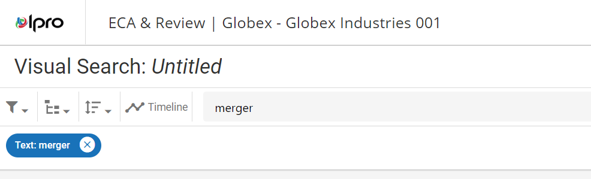

The following sections describe criteria you can add to modify the scope of your search. You can complete one or all, depending on how focused you would like the search to be.
Text Search
Text searches are, as the name implies, full text searches for words or phrases in case database fields (and corresponding images, native files, and so on). To search for a specific term or phrase, type the search expression into the main search bar.
Press Enter or select the magnifying glass beside the search bar to add the expression as a search criterion. A chip shows beneath the search bar that displays the term used in the search.

After the search expression has been entered, you can continue defining the visual search by selecting additional criteria, or you can run the search by clicking the Search button at the top-right corner of the screen.
|
|
Note: You can input only one search expression when defining a text search. Entering a second expression into the main search bar replaces the first. |

Search Filters
Search Filters allow you to further refine your search results by selecting one of the filter options in the Filters drop-down menu. The Filters icon is located at the top-left corner of the screen. Filters include all of the database fields in your case and system fields.

Relationships
When performing a search that requires the use of a search relationship, use the Relationships drop-down menu. You can select only one from the list. The Relationships icon highlights blue to indicate that a relationship is selected.

Sort Options
This option allows you to organize (sort) search results based by field content (the columns in the case table) in ascending or descending order.

Random Sampling
This option allows you to define a search to return a random sampling of documents matching your search criteria.

Timeline
The Timeline (also located in Advanced Search) allows you select date criteria for the search. This includes limiting search results to a specific date range, which displays on the Timeline. You can select Include Empty & Invalid Dates as well.
To open the Timeline click the icon at the top of the screen.
The Timeline opens across the top of the dashboard.

When finished defining your Timeline search, close the Timeline by selecting the X icon at the top-right corner of the Timeline dialog box. To remove the date filtering, click the Reset button. The Timeline icon highlights blue to indicate that the date range has been added to the search definition.